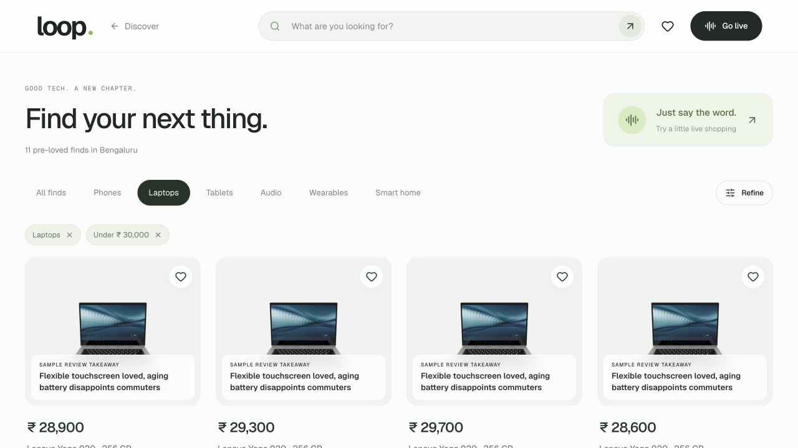
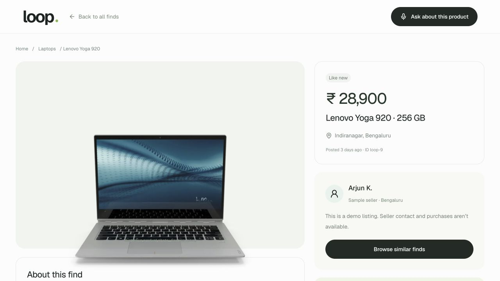
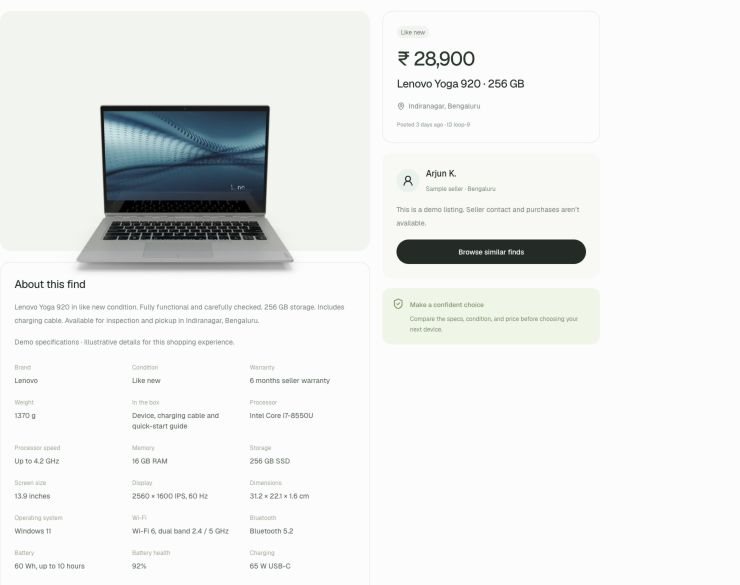
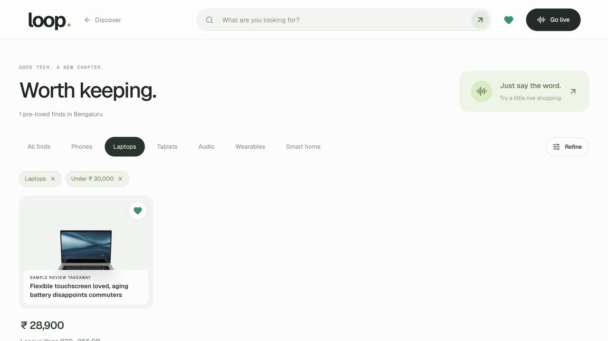

Commerce / Voice-first discovery
eCommerce Discovery
Live Concept
Search and ask about products in a continuous voice conversation.

01 / The opportunity
What happens when shopping becomes a conversation?
Voice has always been the most natural conversational medium for us. But using it with a product has traditionally been clunky. You say something, wait, and then figure out whether it actually understood you.
With GPT‑Live‑1 arriving in the API on September 10, 2026, that equation starts to change. It can listen and speak at the same time, so the conversation can keep moving as you add something or change your mind.
Now imagine telling your ecommerce platform what you want and seeing relevant options appear in front of you. That’s what this concept, Loop, is exploring.
02 / Start simply
“Can you find me laptops below ₹30,000?”
Go into live mode and ask, “Can you find me laptops below ₹30,000?” Well, that’s a simple search. You could probably do it pretty quickly with a couple of filters. But then keep going.

03 / Refine the search
Explain what you’ll use it for.
“Actually, I’m looking for something for gaming. I need a pretty powerful processor and probably a dedicated GPU. What do you believe are the best options for me now?”
You can explain what you’ll use it for, what matters to you, and where you’re willing to compromise. If the budget doesn’t fit, you can talk that through too. You don’t have to keep translating your thoughts into another search query.

04 / Why voice matters
Let people ramble a little.
To be honest, we’re quite comfortable rambling about what we want. We’ll often say much more than we would ever type into a search box.
I don’t think people need to arrive with a perfectly articulated requirement. Let them be raw about it. A twenty-second ramble can give us so many more data points about what they actually need, as the thought comes to them.
That’s the part of voice-first shopping I find particularly interesting. You can start with a broad idea and work it out as you go.
05 / Product details and reviews
You still want to see what you’re choosing.
You still want to look at the products, ask about the specs, and understand what might disappoint you. The conversation and the screen need to work together. These sample reviews show how that context can sit alongside the product.

And as you go, you start keeping the options that make sense. This concept focuses on discovery and shortlisting. There’s already a lot of value to explore in helping someone figure out what they want.

06 / Beyond the keyboard
Why stop at your phone?
Now take that a little further. Why should this stay on your phone or laptop? Imagine talking to the biggest screen in the house—probably your TV—and seeing the options in front of you.
The TV experience is still an idea, but I can see shopping moving in that direction. Voice makes screens where typing has always been awkward much more interesting. This is a small concept, but it gives you a feel for what could come next.
07 / Try it yourself
Try the demo
Choose Live shopping in Loop and allow microphone access. Start simply, then just keep talking about what you actually need.
Open LoopLive demo · 200 sample electronics listings. Product details and reviews are illustrative; seller contact and purchases are unavailable. Use the session’s Stop control when you have finished talking.